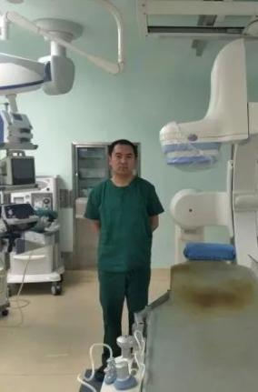

后起之秀
>
科技为民 奋斗有我丨鄂尔多斯青年科技新星——吴迎春
科技为民 奋斗有我丨鄂尔多斯青年科技新星——吴迎春
2020-5-27 20:42 澎湃新闻
2020年是全面建成小康社会和“十三五”规划的收官之年，是实现第一个百年奋斗目标的决胜之年。为深入学习贯彻习近平新时代中国特色社会主义思想，团结引领广大科技工作者不忘初心、牢记使命，围绕中心、服务大局，为疫情防控和经济社会发展、为决胜全面建成小康社会做出新的贡献，市科协决定于5月30日第四个“全国科技工作者日”前后，在全市组织开展以“科技为民、奋斗有我”为主题的系列宣传表彰活动，以实际行动为科技工作者献上诚挚的节日祝福，增强科技工作者自豪感、获得感、认同感，在科技界大力弘扬践行“奉献、友爱、互助、进步”的志愿服务精神，为鄂尔多斯市科技创新和高质量发展凝聚起磅礴力量。

吴迎春，男，鄂尔多斯市中心医院神经内科副主任医师。鄂尔多斯市青年科技新星奖获得者。
吴迎春独立完成全脑血管造影术300余例，年平均100例以上介入手术，包括颈动脉成形术（球囊扩张术、支架置入术）、 椎动脉支架置入术、锁骨下动脉支架置入术、大脑中动脉支架置入术、基底动脉支架置入术、急性缺血性卒中动脉溶栓术、机械取 栓术及脑动脉慢性闭塞再通等高难度、高风险手术，且无一例并发症，部分代表性病例在线发表于中国卒中学会神经介入分会微信官网：神经在线上，科室被评为全国百家优秀神经介入中心。
多次接受当地媒体采访及参加大型学术交流，2017年应邀在李神经微信中在线主讲《急性缺血性卒中血管内治疗-solitaire 支架取栓》，参与人数近5000人次，目前仍保持参与人数最高纪录，多次在地区及华北神经介入年会讲座，得到了学术界和社会的一致认可，2017年被中国卒中学会国际介入卒中学院评为优秀毕业生（全国仅20人），并应邀在上海、重庆、包头和济南等地进行学术交流。主持并作为第一完成人的开展的新技术和新项目：《神经介入在缺血性脑血管病诊治中的应用》、《急性缺血卒中的血管内治疗-solitaire AB支架取栓》 《急性基底动脉主干闭塞的血管内治疗》连续3年鄂尔多斯市中心医院医疗新技术、新项目一等奖；《多模式MRI指导下急性缺血性卒中 血管内精准治疗》获得2017年鄂尔多斯市中心医院新技术、新项目内科组二等奖。2018年获得鄂尔多斯市青年科技新星奖。